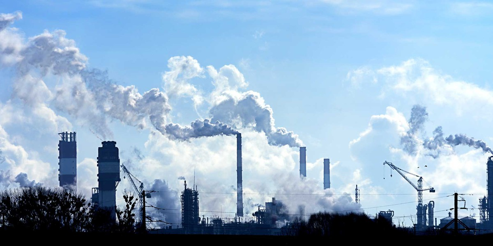

Cosa ha in mente di fare l'inghilterra?
Il primo ministro Boris Johnson ha presentato un piano per “una rivoluzione industriale verde” che punta a fare del Regno Unito un Paese climaticamente neutrale entro il 2050 e a realizzare consistenti riduzioni di emissioni di gas serra entro il 2030. Il piano britannico prevede di sviluppare le tecnologie avanzate necessari per supportare le nuove ambizioni energetiche, nonché di fare della City di Londra il centro globale della finanza verde. Con una nota stonata presente in questo piano britannico:
In cosa consiste il piano britannico?
Un finanziamento pubblico per costruire nuove centrali nucleari, nonostante la forte crescita dei costi di questa tecnologia che la rendono ormai più cara delle rinnovabili e nonostante i suoi noti e rilevanti problemi e impatti ambientali. Per attuare questo piano il governo britannico annuncia, infine, lo stanziamento di 12 miliardi di sterline: una somma inadeguata, al di sotto dei livelli dei corrispondenti stanziamenti europei, insufficiente per realizzare entro il 2030 gli obiettivi annunciati.